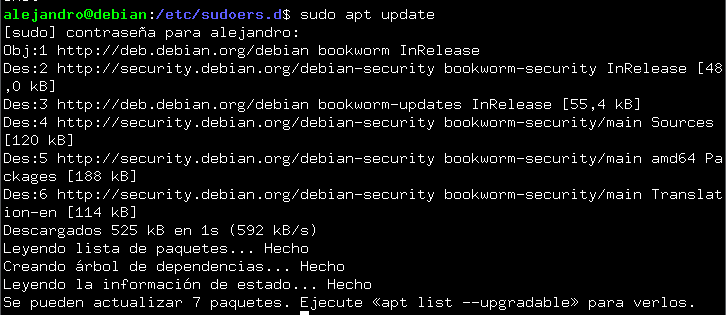

Práctica 2.1 - Instalación y configuración de servidor Nginx.
Instalación servidor web Nginx.
El primer paso a seguir en esta práctica, es la instalación de nginx en nuestra máquina Debian. Para ello primero deberemos actualizar los repositorios con el comando:

Y luego instalaremos el paquete de Nginx.
sudo apt install nginx
Si queremos comprobar que se ha instalado correctamente, ejecutaremos el siguiente comando:
Creación de la carpeta del sitio web.
Todos los archivos que formarán parte de un sitio web se organizarán en carpetas. Estas suelen estar en /var/www. Por ello crearemos la carpeta con el nombre de nuestro sitio web;
Una vez creada la carpeta, deberemos clonar este repositorio de github dentro de la misma ; https://github.com/cloudacademy/static-website-example
Es necesario que si no teneis instalado git en vuestra máquina que lo instaleis con el siguiente comando:
Y para la clonación usarás el siguiente:
Ahora, pondremos a www-data como propietario de esta carpeta y de todo lo que haya dentro.
Le daremos los permisos necesarios para evitar errores de acceso al entrar en el sitio web:

Para comprobar que todo funciona, podemos acceder desde nuestro cliente al servidor. Primero obtendremos la ip con el siguiente comando;
Solo queda introducirlo en el navegador y si todo va bien tendremos el siguiente resultado.
Configuración de servidor web NGINX.
En Nginx hay dos rutas importantes. Una de ellas es sites-available, esta carpeta contiene los archivos de configuración de cada uno de los sitios web que alberga el servidor, la otra es sites-enabled, contiene los archivos de configuración de los sitios habilitados, los que funcionan en ese momento.
EN sites-available hay un archivo default que es la página que muestra si entramos al servidor sin ningún sitio web. Para que nginx muestre el contenido de nuestra web, necesitaremos crear un bloque de servidor con las directivas correctas. Para ello crearemos un archivo nuevo en /etc/nginx/sites-available/nuestro-dominio:
Y lo modificaremos de la siguiente forma:
Ruta del index ;
Entre el index y los archivos, crearemos un archivo simbólico de los sitios que están habilitados, para que se de de alta automáticamente.
Reiniciaremos el servidor para aplicar todos los cambios hechos:
Comprobaciones.
Al no poseer servidor DNS que traduzca los nombres a IPs, debemos hacerlo manualmente. Editaremos el archivo /etc/hosts de nuestra máquina anfitriona para que asocie la IP de la máquina virtual a nuestro nombre del servidor. Este archivo en Windows se encuentra en el siguiente directorio : C:\Windows\System32\drivers\etc\hosts :
Si queremos comprobar las peticiones, podemos hacerlo gracias a un archivo situado en /var/log/nginx/acces.log. Este como el ejemplo nos muestra, registra todas las peticiones.
Configurar servidor SFTP en Debian.
Para transferir archivos de nuestra máquina local a nuestra máquina virtual, aunque hay métodos mejores y más modernos, en este caso utilizaremos ftp/sftp. Es un protocolo de transferencia de archivos entre sistemas conectados a una red TCP. La diferencia entre estos, esque debido a la inseguridad de FTP, se le añadió una capa SSH para hacer SFTP y darle más seguridad. En primer lugar instalaremos desde los repositorios:

Crearemos una carpeta en nuestro home en debian.
Iremos a la configuración vsftpd, le indicaremos que este será el directorio al cual vsftpd se cambie después de conectarse el usuario. Ahora crearemos los certificados de seguridad necesarios para aportar la capa de cifrado a nuestra conexión.
Una vez terminado, cambiamos la configuración de vsftpd con el editor de textos.
Bucaremos las siguientes líneas;
rsa_cert_file=/etc/ssl/certs/ssl-cert-snakeoil.pem
rsa_private_key_file=/etc/ssl/private/ssl-cert-snakeoil.key
ssl_enable=NO
Y las sustituiremos por estas.
Tras guardar la configuración, reiniciaremos el servicio.
Cliente SFTP
Link descarga : https://filezilla-project.org/download.php?type=client
Utilizaremos SFTP por su seguridad, Indicaremos la ip del servidor, el nombre de usuario, contraseña y el puerto 22, no el 21 en el caso de la captura.
Aceptamos el certificado desconocido, ya que al ser nuestro servidor no hay peligro.
Tras esto comprobaremos que la conexión se ha realizado con éxito.
Probaremos a subir un archivo desde nuestra máquina local a la virtual. Comprobando que ha sido satisfactoria.

HTTPS
En este apartado, añadiremos a nuestro servidor una capa de seguridad. Haremos que todos nuestros sitios web alojados hagan uso de los certificados SSL y se acceda a ellos por medio de HTTPS.
Para ello, necesitaremos generar unos certificados autofirados, y cambiar los parametros necesarios en el fichero de configuración de nuestros host virtuales.
Como primer paso, instalaremos OpenSSL mediante los siguientes comandos;
Crearemos el certificado SSL autofirmado. Explicación de comando;
- x509 : Indica que se creará un certificado autofirmado
- nodes : No se cifrará la clave privada con una contraseña
- days 365 : Será válido por 365 días
- newkey rsa:2048 Creará una clave RSA de 2048 bits
- keyout servidor.key : Especifica el archivo donde se guardará la clave privada.
- out servidor.crt : Especifica el archivo donde se guardará el certificado.

Editaremos el archivo del sitio web en Nginx:
$sudo nano /etc/nginx/sites-available/tu_servidor.com
Configuraremos el bloque de servidor para HTTPS: Añadiremos un bloque de servidor para el puerto 443 (HTTPS). También añadiremos un bloque para redireccionar HTTP a HTTPS para que redirigir las solicitudes HTTP al puerto 443.

En caso de que no lo hayas hecho, debemos habilitar el sitio web con el siguiente comando:
sudo ln -s /etc/nginx/sites-available/tu_servidor.com /etc/nginx/sites-enabled/
Y por ultimo, para comprobar la configuración de Nginx ejecuta el siguiente comando:

Resultado
Si todo ha salido bien, al buscar tu dominio en el navegador debe darte esta salida:
Cuestiones finales
- ¿Que pasa si no hago el link simbólico entre sites-available y sites-enabled de mi sitio web?
Si no hacemos el enlace simbólico, nginx no activará la configuración del sitio web. Sites-avaliable solamente guarda los archivos, nginx, usa las configuraciones que están en sites-enabled.
- ¿Qué pasa si no le doy los permisos adecuados a /var/www/nombre_web?
Que no se podrá acceder desde ningún servidor a los archivos del sitio.